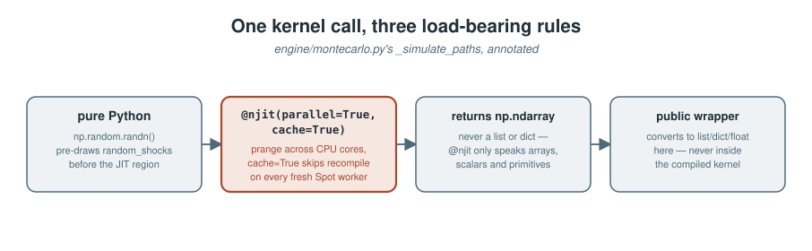
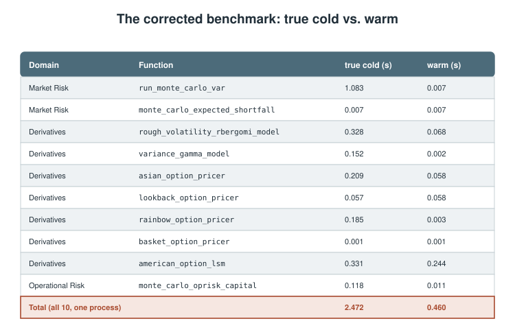
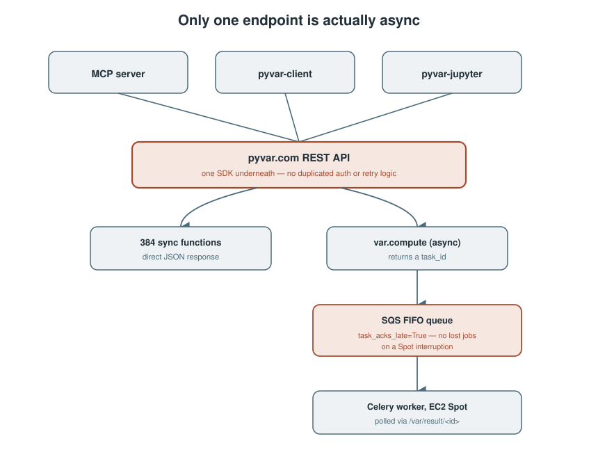
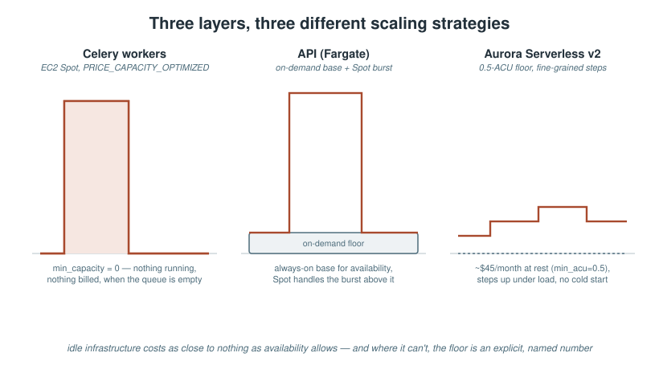

Our first article told the story of building pyvar with Claude Code and the regulatory challenges it worked through along the way. This one is narrower and more mechanical on purpose: how does 100,000 Monte Carlo paths become a number in 2 to 10 seconds, what happens to that request between a client's HTTP call and a worker actually running it, and what does the AWS infrastructure underneath look like when nobody's paying for idle capacity. Every claim here is something you can point at a file and check.
The kernel: what @njit(parallel=True) actually buys you
The Monte Carlo VaR engine's inner loop is engine/montecarlo.py's _simulate_paths — the function that turns a historical return series and a block of pre-drawn random numbers into a full simulated loss distribution:
@njit(parallel=True, cache=True)
def _simulate_paths(
returns: np.ndarray, # shape (T,) -- historical daily log-returns
random_shocks: np.ndarray, # shape (n_sims, horizon) -- pre-drawn N(0,1)
horizon: int,
) -> np.ndarray:
mu = np.mean(returns)
sigma = np.std(returns)
n_sims = random_shocks.shape[0]
pnl = np.zeros(n_sims)
for i in prange(n_sims): # parallelised across CPU cores
cumulative = 0.0
for t in range(horizon):
daily_return = mu + sigma * random_shocks[i, t]
cumulative += daily_return
pnl[i] = cumulative
return pnl
Three design choices here aren't stylistic — each one is load-bearing, and each is a rule pyvar's own CLAUDE.md enforces on every function in engine/, not just this one:
Random numbers are pre-drawn in pure Python, before the JIT region. random_shocks arrives already generated — np.random.randn(n_sims, horizon) runs entirely outside _simulate_paths. Numba's random API inside @njit is limited enough that fighting it isn't worth it; drawing once, vectorised, in plain NumPy is both simpler and faster than drawing inside the compiled loop.
prange, not range, and only under parallel=True. The outer loop over simulation paths is embarrassingly parallel — each path is independent of every other — so prange lets Numba split it across CPU cores automatically. Using plain range() here would silently run single-threaded; there's no error, just a slower kernel that looks identical in the source.
cache=True is mandatory, not optional. Without it, every fresh Celery worker process pays Numba's full LLVM compilation cost on its first call — and workers here aren't long-lived: the compute stack scales Spot instances to zero when the job queue is empty (more on that below), so "fresh worker" isn't a rare cold-start, it's the normal case after any period of no traffic. cache=True persists the compiled machine code to disk so a restarted worker with the same code and the same Numba version can skip recompilation entirely.
The function returns a plain NumPy array — not a Python list, not a dict — because @njit functions can only work with NumPy arrays, scalars, and primitives; converting to native Python types happens strictly in the public wrapper function that calls this kernel, never inside the compiled region itself.

The benchmark
pyvar publishes a reproducible benchmark (python scripts/p7_bench.py, fully local and offline) timing the 10 hottest Monte Carlo kernels across Market Risk, Derivatives, and Operational Risk at n_simulations=100,000. Measuring a genuine first-ever compilation takes care: Numba's on-disk cache persists compiled artifacts across sessions, so simply calling each function twice and labelling the first call "cold" only measures a true cold-compile cost when that cache starts out empty.
The original script called each function twice in-process and labelled the first call "cold". That's only a genuine cold-compile measurement if Numba's on-disk cache is empty — and it wasn't. The machine already held compiled artifacts from earlier sessions, so the "cold" column was actually measuring disk-cache-warm, process-cold overhead: it skipped the real LLVM compilation step entirely, understating true first-call cost.
The methodology: point NUMBA_CACHE_DIR at a fresh, empty temp directory before importing anything that touches Numba — Numba reads that environment variable once, at import time, so setting it any later has no effect. That forces a genuine first-ever compilation on the first call. Results:

run_monte_carlo_var's true cold cost — 1.08 seconds — is roughly 150x the originally-reported (wrong) figure of 0.196s, because it's the one kernel in this batch compiling a parallel=True function, which costs materially more to JIT than a sequential one. The aggregate true-cold total across all 10 (2.47s) lines up closely with a number that had been an educated estimate in this codebase's known-issues notes for a while: "Numba first-call compilation takes ~2s on fresh worker." Having an actual reproducible measurement behind that estimate, instead of an approximation nobody had gone back to verify, is the entire point of publishing the benchmark script in the first place.
For a sanity check that these aren't just fast-but-wrong numbers: american_option_lsm at spot=100, strike=100, rate=0.02, sigma=0.2, tau=1.0 prices at 7.0948, against a closed-form Black-Scholes European put of 6.9359 for the same parameters. American should price at or above European by a plausible early-exercise premium — here, 0.159 — and does. A lower American price would have meant a broken LSM implementation; this isn't one.
The request path: only one function is actually async
Three client surfaces — the MCP server, the pyvar-client SDK, and pyvar-jupyter's IPython magics — all converge on one SDK, so there's no duplicated auth or retry logic to keep in sync. But only var.compute goes through the async Celery/SQS job queue. The other 384 functions are synchronous request/response.
That split isn't arbitrary — it's about which functions actually run long enough to justify submit-and-poll instead of a direct HTTP response, and Monte Carlo path count is the deciding factor. This is also why pyvar-jupyter's %pyvar magic can return a result inline with no polling loop of its own: var.compute's submit/poll cycle is hidden entirely inside the SDK, and everything else was never async to begin with.
For the one function that does queue: the SQS queue is FIFO, task_acks_late=True is non-negotiable (removing it means an interrupted Spot instance loses the job permanently, not just delays it), and the queue's visibility timeout must exceed the worst-case simulation runtime — if a new simulation type ever takes longer than the current timeout, both the Celery task timeout and the SQS visibility timeout in the CDK stack need updating together, or a still-running job gets redelivered to a second worker while the first one is still working on it.

The infrastructure: paying for compute only when there's a queue to drain
pyvar's AWS layer is 16 separate CDK stacks (pyvar-cdk/stacks/) — network, API, compute, data, queue, edge/WAF, observability, alerts, AMI baking, and a few narrower ones (SES, token reporting, public data, local packaging). Three design choices stand out as the ones actually shaping the cost and reliability profile:
Celery workers run on EC2 Spot, and scale to zero. The worker Auto Scaling Group uses PRICE_CAPACITY_OPTIMIZED allocation — AWS picks the Spot pool statistically least likely to be reclaimed soon, not simply the cheapest one, because for financial compute an interrupted run costs more than a slightly pricier instance choice. min_capacity=0 means when the SQS queue is empty — nights, weekends, any quiet period — there are exactly zero worker instances running, and therefore nothing to pay for beyond the queue itself sitting idle.
The API tier mixes FARGATE_SPOT with a guaranteed on-demand base. Unlike the worker fleet, the API can't scale to zero — it needs to always answer requests — so it runs a small on-demand FARGATE base capacity for guaranteed availability, with FARGATE_SPOT handling the scale-out above that floor. That split is deliberate: on-demand where availability can't be compromised, Spot where it can.
Aurora Serverless v2 scales in 0.5-ACU steps with no cold start. At its floor (min_acu=0.5), Aurora costs roughly $45/month at rest — a fixed floor, not a per-request cost — and scales up in fine-grained increments under load rather than the all-or-nothing cold-start behaviour Aurora Serverless v1 had. Because it never actually stops, there's no cold-start penalty when traffic returns after a quiet period, unlike the worker fleet's genuine scale-to-zero.
The common thread across all three: idle infrastructure should cost as close to nothing as the service's own availability requirements allow, and where it can't (the API's on-demand base, Aurora's ACU floor), that floor is an explicit, named number in the code — not an accident of whatever the default happened to be.

One more layer: baking the Numba cache into the AMI itself
Scale-to-zero workers mean paying the ~2 seconds of true cold-compile cost (measured above) on every scale-out event from zero — acceptable for an interactive one-off, less so multiplied across a fleet restarting after a quiet weekend. Production worker instances launch from a pre-baked AMI (pyvar-prod-worker-*) with the Numba cache already warm, rather than relying on cache=True alone to save a from-scratch compile on every single fresh instance.
Keeping that AMI in sync with the compute code is itself automated: the deployment pipeline hashes the CDK's AMI-definition stack, and whenever that hash changes since the last recorded bake, it triggers an EC2 Image Builder pipeline run and blocks (polling, capped at 30 minutes) until the new AMI reaches AVAILABLE — all before the CDK synth step that resolves which AMI to actually launch. Get the ordering wrong and you either deploy against a stale AMI silently, or cdk synth fails outright because no matching AMI has ever been built for a first deploy. Getting it right means a worker fleet that scales from zero to warm, compiled Numba kernels in the time it takes the Spot fleet to launch — not the time it takes to also recompile ten JIT kernels from scratch.
Sources
engine/montecarlo.py— the_simulate_pathskernel, quoted above.docs/p7-numba-profiling-results.md— the full benchmark methodology and the results table reproduced above.scripts/p7_bench.py,README.md§9 — reproduction instructions for the benchmark.pyvar-cdk/stacks/compute_stack.py,api_stack.py,data_stack.py,queue_stack.py— Spot allocation strategy, scale-to-zero configuration, Fargate/Fargate Spot split, Aurora Serverless v2 ACU settings, SQS FIFO/visibility-timeout configuration.CLAUDE.md§3.1–3.2, §11 — the Numba JIT rules enforced acrossengine/, the Celery/SQS broker rules, and the AMI-baking automation description.docs/publications/pyvar-buildstory-medium-article.md— the request-flow illustration and three-surfaces architecture this piece builds on without repeating.